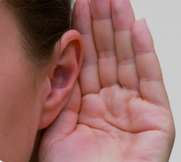

Votre audition, notre engagement au quotidien

Chez Optique et Audition Wave, nous comprenons l'importance d'une audition optimale pour votre qualité de vie. C'est pourquoi nous offrons un suivi personnalisé et des solutions adaptées à vos besoins spécifiques. Que ce soit pour un simple test auditif ou pour le choix de dispositifs auditifs performants, notre équipe d'experts vous accompagne à chaque étape. Votre confort et votre bien-être auditif sont notre priorité !